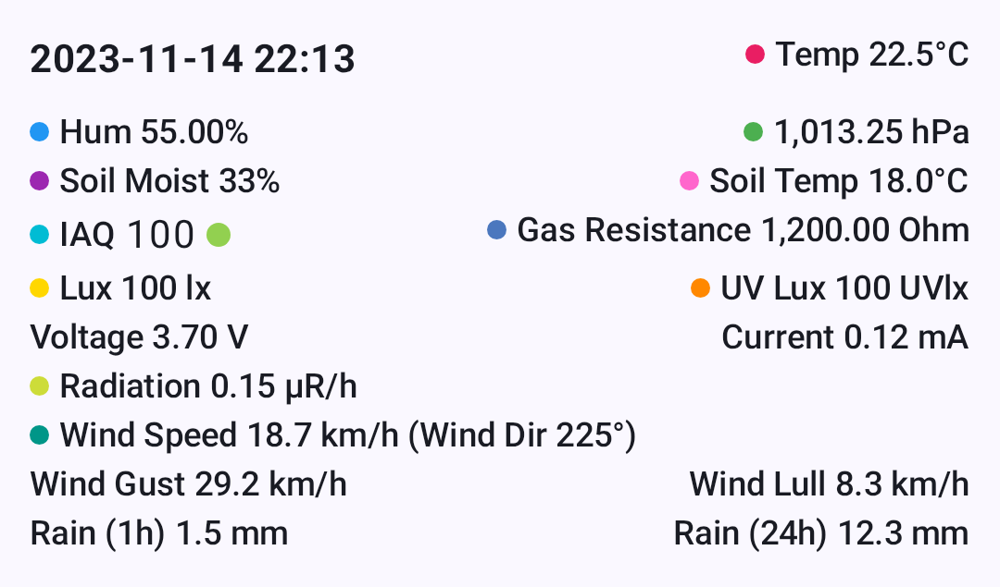

Units, Measurement & Locale
The Meshtastic app automatically displays temperatures, distances, speeds, and times in the units your device is configured to use — no settings to change inside the app.
How It Works
Meshtastic radios always transmit data in metric units (meters, °C, m/s, hPa, etc.). When the app receives this data, it converts and displays values in whatever unit system your device’s locale specifies.
On Android, your measurement preferences are determined by your system Language & Region settings. On Desktop (JVM), the app uses the JVM’s default Locale.
💡 Tip: You never need to toggle units inside the app. Change your system measurement preferences and every screen in Meshtastic updates automatically — node details, telemetry charts, weather, altitude, and more.
Temperatur
Temperature values from environment sensors are transmitted as °C and displayed based on your device’s temperature unit preference.

| Your Setting | You See |
|---|---|
| Celsius | 22°C |
| Fahrenheit | 72°F |
This affects all temperature displays throughout the app: node environment telemetry, soil temperature, dew point, and telemetry chart axes.
Distance & Altitude
Distances between nodes and GPS altitudes are transmitted as meters and automatically scaled and converted.
| Your Setting | Small Distance | Large Distance | Altitude |
|---|---|---|---|
| Metric | 350 m | 2.5 km | 1,200 m |
| Imperial (US) | 1,148 ft | 1.6 mi | 3,937 ft |
The app uses natural scaling — short distances stay in meters or feet, while longer distances switch to kilometres or miles automatically.
Where these appear
- Node list — distance and bearing to each node
- Node detail — altitude, distance from your position
- Map — waypoint distances, traceroute hop distances
- Compass — distance to selected node
Speed
GPS ground speed is displayed in your locale’s preferred speed unit.
| Your Setting | You See |
|---|---|
| Metric | 12 km/h |
| Imperial (US) | 7 mph |
Wind
Wind speed and gust data from environment sensors are transmitted as m/s and converted for display.
| Your Setting | You See |
|---|---|
| Metric | 5 m/s |
| Imperial (US) | 11 mph |
Wind readings appear in the Node Detail environment section and the Environment Telemetry charts.
Rainfall
Rainfall measurements (1-hour and 24-hour totals) are transmitted as mm and converted for display.
| Your Setting | You See |
|---|---|
| Metric | 12 mm |
| Imperial (US) | 0.5 in |
Units That Never Change
Some units are international standards and are displayed the same way regardless of your locale:
| Measurement | Unit | Why |
|---|---|---|
| Barometric pressure | hPa | International meteorological standard |
| Heading / bearing | ° (degrees) | Universal navigation convention |
| Radiation | μR/hr | Standard dosimetry unit |
| GPS coordinates | decimal degrees | Universal geographic standard |
| Humidity, battery, soil moisture | % | Universal |
Date & Time
All timestamps throughout the app — last heard, message times, telemetry logs, chart axes — follow your device’s date and time preferences.
| Setting | What It Controls | Example |
|---|---|---|
| 24-Hour Time | Clock format | 14:30 vs 2:30 PM |
| Date Format | Date ordering | 09/05/2026 vs 05/09/2026 |
The app also uses relative time where it makes sense — for example, “5 min ago” or “2 hours ago” in the node list — which is automatically localised into your device language.
Changing Your Measurement System (Android)
On Android, your measurement system (metric vs imperial) is tied to your region setting:
- Open Android Settings → System → Language & Region
- Change your Region or Measurement units preference
- Return to Meshtastic — values update immediately
💡 Tip: All measurement formatting is handled centrally and respects your platform’s locale, so units stay consistent everywhere in the app.
Related Topics
- Node Metrics — where temperature, distance, and sensor values are displayed
- Telemetry & Sensors — the sensors that produce these measurements
- Measurement & Formatting — developer reference for the formatting utilities
- Settings — Radio & User — region setting that drives unit selection